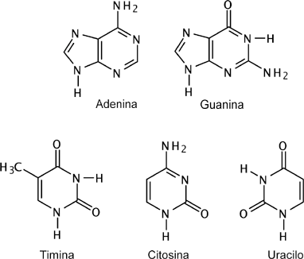
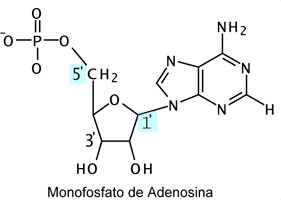
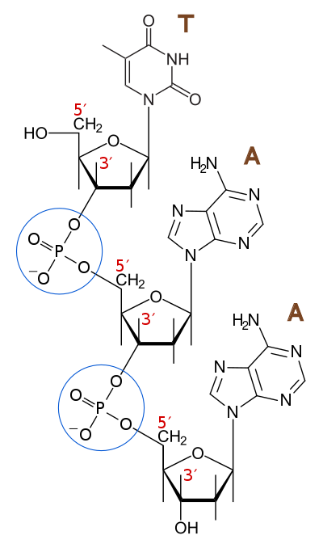

El enlace fosfodiéster y los nucleótidos
Los nucleótidos que forman los ácidos nucleicos se componen a su vez de moléculas: un fosfato, una pentosa y una
base nitrogenada. Entre el ADN y el ARN la diferencia fundamental es la pentosa que incluyen: ribosa para el ARN,
2-desoxirribosa para el ADN. Las 4 bases nitrogenadas que pueden unirse a las pentosas dan identidad al nucleótido.
La otra diferencia entre ADN y ARN es precisamente su repertorio de bases nitrogenadas. Comparten la adenina, la
guanina y la citosina, mientras que la timina es específica del ADN y el uracilo del ARN.
Figura 1.8:
Las 5 bases nitrogenadas de los ácidos nucleicos, tomadas de superfund.pharmacy.arizona.edu.
A y G son purinas, mientras que C, T y U son pirimidinas.
|  |
Figura 1.9:
Ejemplo de nucleótido, tomado de superfund.pharmacy.arizona.edu.
|  |
Figura 1.10:
Dibujo de un trinucleótido 5'-TAA-3' mostrando dos enlaces fosfodiéster consecutivos,
tomado de http://www.wikiwand.com.
Figura reproducida con permiso de los autores.
|

|
Los nucleótidos se enlazan por medio de enlaces fosfodiéster para formar polinucleótidos, es decir, cadenas de ADN o ARN, cuyo sentido viene definido por los 2 carbonos que intervienen en
este enlace.
PDF
Contreras-Moreira,B. (2018) Algoritmos en bioinformática estructural. doi:10.20350/digitalcsic/8544
http://www.eead.csic.es/compbio